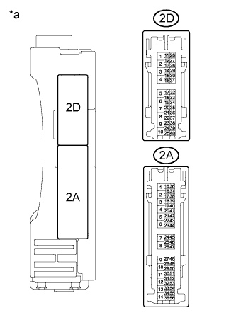

ENTRY AND START SYSTEM (for Start Function) > Power Source Mode does not Change to ON (ACC) |
| Problem Symptom | Data List Item | Active Test Item |
| Power source mode does not change to on (ACC) but does change to on (IG) | Power Source Control
Starting Control
| - |
| 1.CHECK DTC (ALL) |
Using the intelligent tester, confirm the output of DTCs for all systems.
|
| ||||
| OK | |
| 2.INSPECT DRIVER SIDE JUNCTION BLOCK ASSEMBLY (ACC RELAY) |
|  |
Disconnect the 2A and 2D driver side junction block assembly connectors.
Measure the resistance according to the value(s) in the table below.
| Tester Connection | Condition | Specified Condition |
| 2A-48 - 2D-4 | 20°C (68°F) | 50.63 to 123.75 Ω |
| *a | Component without harness connected (Driver Side Junction Block Assembly) |
|
| ||||
| OK | |
| 3.CHECK HARNESS AND CONNECTOR (POWER MANAGEMENT CONTROL ECU - DRIVER SIDE JUNCTION BLOCK ASSEMBLY) |
Disconnect the 2A and 2D driver side junction block assembly connectors.
Disconnect the G39 power management control ECU connector.
Measure the resistance according to the value(s) in the table below.
| Tester Connection | Condition | Specified Condition |
| G39-19 (ACCD) - 2A-48 | Always | Below 1 Ω |
| 2D-4 - Body ground | Always | Below 1 Ω |
| G39-19 (ACCD) - Body ground | Always | 10 kΩ or higher |
|
| ||||
| OK | |
| 4.CHECK POWER MANAGEMENT CONTROL ECU |
Connect the power management control ECU connectors.
| *a | Component with harness connected (Power Management Control ECU) | - | - |
Measure the voltage according to the value(s) in the table below.
| Tester Connection | Switch Condition | Specified Condition |
| G39-19 (ACCD) - Body ground | Engine switch off | 1 V or less |
| Engine switch on (ACC) | 8.5 V or higher |
|
| ||||
| OK | ||
| ||